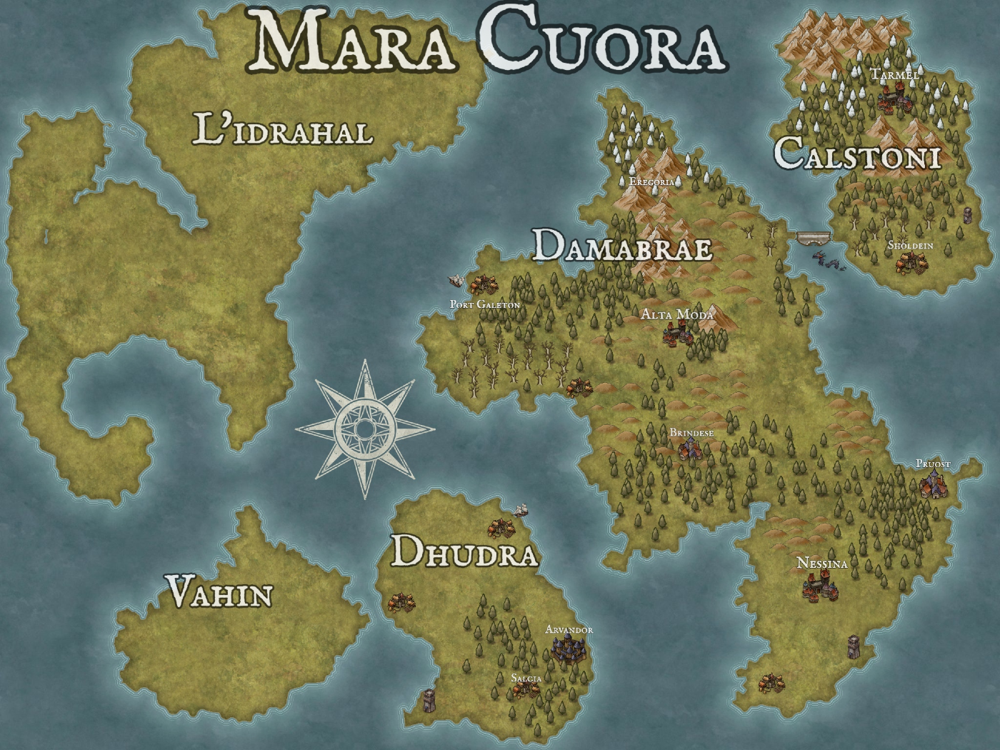

Mycelae
is a planetary cluster system that revolves around a single star, known as the "Cragstar". The Mycelae cluster is home to several planets and moons which are interconnected through a webbing of unknown galactic energy fields. There are about seven known planets which inhabit this cluster and may contain life. The planet we are concerned with for our adventures at this time is known to its inhabitants as Mara Cuora. or Ocean Heart. You will find large ocean bodies and various continents spread throughout as well as towering mountains and deep underground valleys.
Mara Cuora is home to a people who have lost their connection with their past. Records of history still rot in caves undiscovered, and those who live nearby show little interest. Ironically the soul of tradition lingers on as the general population is consumed with their daily rituals and family affairs. The gods only know what hidden power lies in the ancient records of yore.
We find our crew still caught
in the anxiety of keeping to the routine of home-life, or heading out for
adventure, as they have yet to discover the bonds that bring them together. Each
of them having received an
unusual letter
bidding them travel to the city of
Alta Moda, in the major continent of
Damabrae
for an afternoon of reckoning a newly uncovered document from beneath mount
Va'aurum, of which few would be brave enough to gaze upon...
